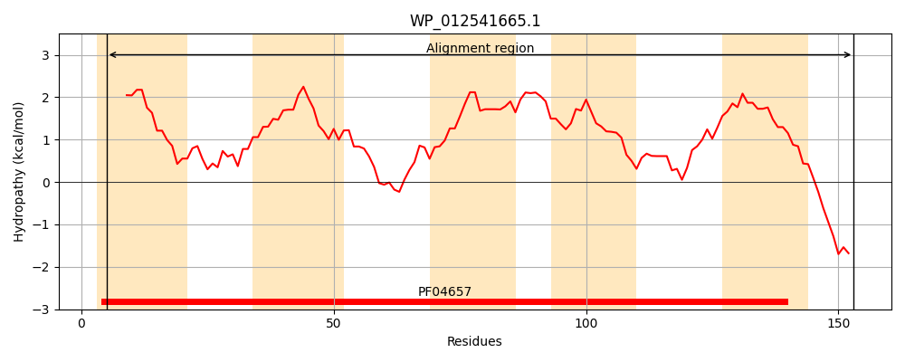
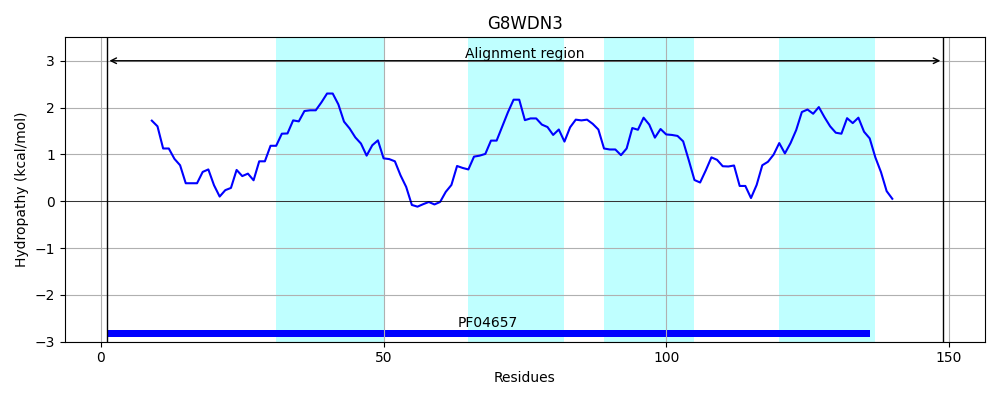
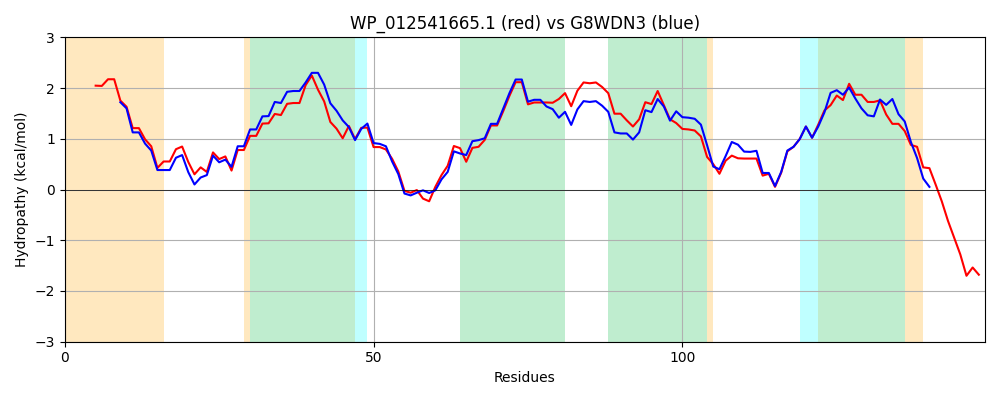

Hit Accession: G8WDN3
Hit TCID: 2.A.7.21.5
Hit Description: gnl|BL_ORD_ID|4879 gnl|TC-DB|G8WDN3|2.A.7.21.5 Uncharacterized protein OS=Klebsiella oxytoca (strain ATCC 8724 / DSM 4798 / JCM 20051 / NBRC 3318 / NRRL B-199 / KCTC 1686) GN=KOX_20235 PE=4 SV=1
Mach Len: 149
e:0.000000
Query TMS Count : 5
Hit TMS Count: 4
TMS-Overlap Score: 3.400000
Predicted Substrates:None
BLAST Alignment:
Score: 567 , Bit scores: 223 bits, E-value: 6.3e-76, Alignment length: 149, Percentage identity: 75
Query: 5 MILLAVAGGAMLSIQAAINGQLGSKVGVFKSAFLTFSVGALVTGLLIFFFEPKHSLTLMDVPKWQLLGAMFGVPYIVIMVLAVQRIGAAVATVAVIFGQLTMSMLIDNFGWLGNASIPFSMSRIGAIICLGIALFFIYSSSKSKAATAK 153
MILLA+ GGAMLS+QAAING+LGS+VGVF+SAFLTF+VGAL+T LLIF+F P S TL+DVPKWQLLGA GVPYIVIMV+AVQRIG A ATVAVIFGQL MS+LIDNFGWLGN +I FS R+GAI+CLG+ALFFIY SS + A K
Sbjct: 1 MILLALVGGAMLSMQAAINGRLGSQVGVFRSAFLTFAVGALITALLIFYFAPHQSTTLLDVPKWQLLGAFCGVPYIVIMVVAVQRIGTATATVAVIFGQLAMSLLIDNFGWLGNDAIAFSAGRLGAIVCLGLALFFIYRSSAAAKAEDK 149 | Protein Hydropathy Plots: |
|---|
|  |  |
Pairwise Alignment-Hydropathy Plot:
|
|---|
|  |